Toleransi & Empati di Dunia Digital
Di balik layar ada manusia. Yuk, jadi warganet yang bijak!
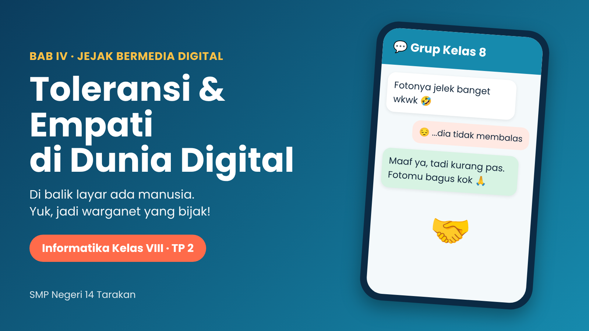
1. Pemanasan: Pernah Nggak Sih…?
Jawab dalam hati ya. 😄
- Pernah menertawakan foto teman, lalu lupa kalau dia mungkin malu?
- Pernah membalas pesan saat kesal, lalu menyesal setelah terkirim?
- Pernah diteruskan pesan berantai yang belum tentu benar?
- Pernah dimasukkan ke grup tanpa ditanya?
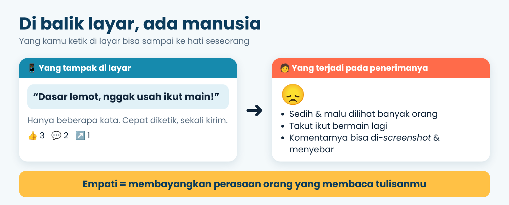
Mengetik komentar kasar cuma lima detik. Tapi yang membaca bisa sedih berhari-hari, dan komentarnya jadi jejak digital kita.
2. Toleransi & Empati
Toleransi = menghargai perbedaan (pendapat, suku, agama, hobi, gaya bicara) tanpa memaksakan pendapat kita. Di Tarakan, teman kita berasal dari berbagai suku dan agama, jadi toleransi itu kebutuhan sehari-hari.
Empati = ikut merasakan perasaan orang lain, lalu memilih tanggapan yang tidak menyakiti.
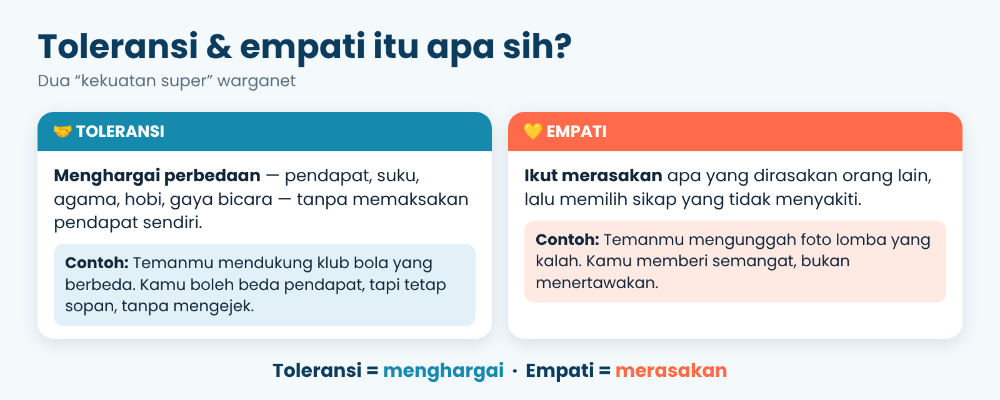
Apakah toleransi berarti harus setuju dengan semua pendapat? Tidak. Kita boleh berbeda, asal cara menyampaikannya sopan.
Latihan empati: 4 langkah
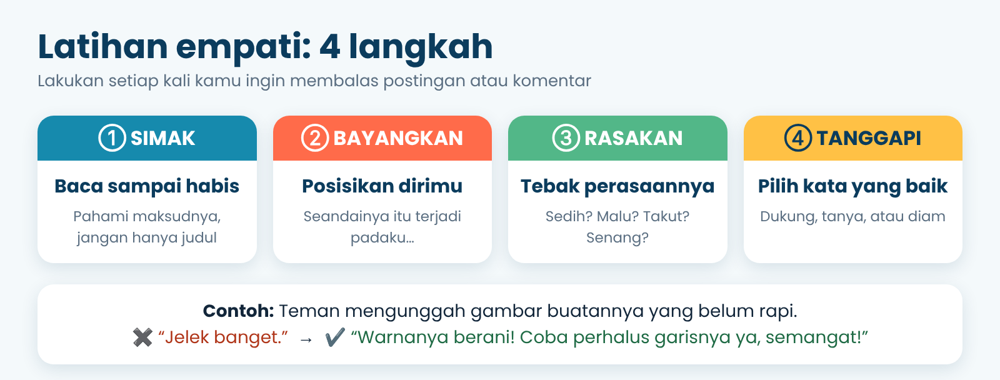
KUDA 1 · Kuis Dadakan
⚡ KUDA 1 · Pilihan Ganda
Teman sekelasmu mengunggah foto lomba yang ia kalahkan. Manakah komentar yang menunjukkan EMPATI?
3. Etika: Offline dan Online
Etika adalah aturan sopan santun dalam bertingkah laku. Ada dua jenis: etika tradisional (offline: kebiasaan dan budaya masyarakat) dan etika kontemporer (online: berkembang karena teknologi yang mempertemukan budaya secara global).
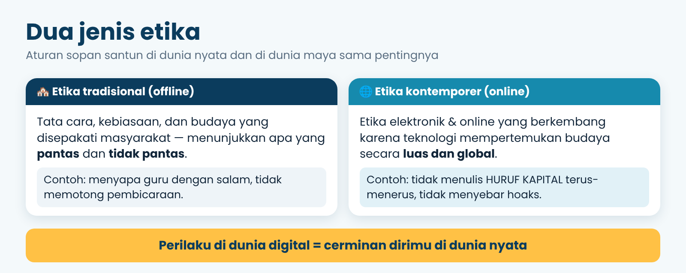
4 "rem" etika digital
| Ruang lingkup | Artinya | Contoh |
|---|---|---|
| 👁️ Kesadaran | Melakukan sesuatu dengan sadar atau punya tujuan. Media digital yang serba instan sering membuat kita bertindak "tanpa sadar". | Bertanya pada diri sendiri: "Untuk apa aku mengunggah ini?" sebelum menekan tombol kirim. |
| ⚖️ Tanggung jawab | Kemauan menanggung konsekuensi dari tindakan dan perilaku kita dalam bermedia digital. | Meminta maaf dan menghapus unggahan yang membuat teman sakit hati. |
| 🔍 Integritas | Prinsip kejujuran sehingga terhindar dari memanipulasi, menipu, berbohong, plagiasi, dan sebagainya. | Menyebut sumber saat mengutip tulisan atau gambar orang lain. |
| 🌟 Kebajikan | Hal-hal yang bernilai kemanfaatan, kemanusiaan, dan kebaikan; media digital dipakai untuk meningkatkan kualitas hidup bersama. | Membuat konten yang menyemangati teman atau mengajak peduli lingkungan. |
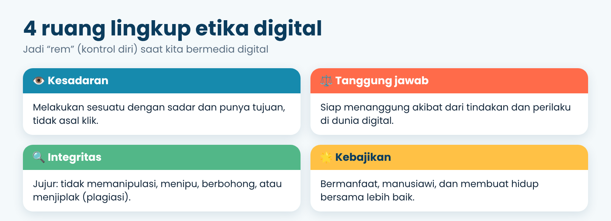
KUDA 2 · Mencocokkan
⚡ KUDA 2 · Mencocokkan
Cocokkan setiap situasi dengan ruang lingkup etika bermedia digital yang paling tepat!
4. Netiket: 10 Aturan Warganet
Netizen = internet + citizen (warganet). Netiket = internet etiquette.
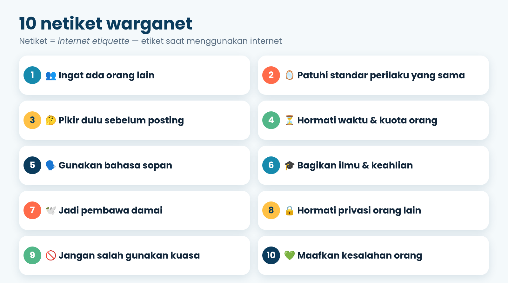
| No | Netiket | Contoh baik ✅ | Contoh kurang baik ❌ |
|---|---|---|---|
| 1 | 👥 Ingatlah keberadaan orang lain | Membayangkan perasaan teman sebelum membalas pesannya. | Mengetik kata kasar karena merasa "toh dia tidak kelihatan". |
| 2 | 🪞 Taat pada standar perilaku online yang sama dengan dunia nyata | Tetap sopan di kolom komentar seperti saat berbicara di kelas. | Menghina orang online padahal di sekolah tidak berani. |
| 3 | 🤔 Berpikir lebih dulu sebelum berkomentar dan posting | Jeda 5 detik, baca ulang, baru kirim. | Membalas dalam keadaan marah lalu menyesal. |
| 4 | ⏳ Hormati waktu dan kuota orang lain | Mengirim ringkasan dan tautan, bukan video berukuran besar ke grup. | Mengirim pesan berantai tidak penting ke banyak grup. |
| 5 | 🗣️ Gunakan bahasa yang sopan | Memakai kata "tolong", "terima kasih", dan "maaf". | Menggunakan kata kasar atau menyindir di kolom komentar. |
| 6 | 🎓 Bagikan ilmu dan keahlian | Membagikan tips belajar atau tutorial sederhana. | Menyimpan semua ilmu dan hanya menyebar keluhan. |
| 7 | 🕊️ Jadilah pembawa damai dalam diskusi yang sehat | Menenangkan suasana: "Kita beda pendapat, tidak apa-apa." | Menambahkan komentar yang memanas-manasi. |
| 8 | 🔒 Hormati privasi orang lain | Minta izin sebelum mengunggah foto bersama teman. | Menyebar nomor atau foto teman tanpa izin. |
| 9 | 🚫 Jangan menyalahgunakan kekuasaan | Admin grup bersikap adil dan terbuka. | Admin mengeluarkan anggota hanya karena tidak disukai. |
| 10 | 💚 Maafkanlah jika orang lain berbuat kesalahan | Menerima permintaan maaf dan memberi kesempatan memperbaiki. | Menyimpan dendam dan mengungkit kesalahan lama di depan umum. |
Jeda 5 detik sebelum kirim
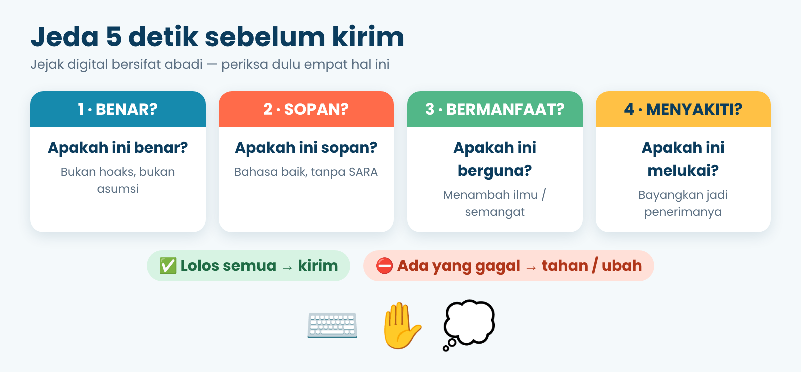
5. Bijak di Chat dan Media Sosial
Aplikasi percakapan
- Jaga privasi: tidak memberikan nomor orang lain kepada siapa pun tanpa izin.
- Menghubungi orang yang belum mengenalmu? Perkenalkan diri dan sebutkan dari siapa kamu mendapat nomornya.
- Membuat grup atau memasukkan seseorang ke grup? Tanyakan lebih dulu kesediaannya.
- Jangan meneruskan pesan yang belum dapat dipastikan kebenarannya.
- Jika melakukan screenshot percakapan, jangan dipakai untuk merugikan orang lain.
- Saat mengirim foto, pastikan tidak melanggar etika kesopanan maupun kesusilaan.
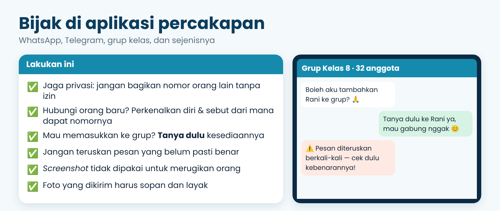
Media sosial
- Gunakan bahasa yang baik dan sopan.
- Unggah foto/informasi/video yang mengedepankan nilai kesopanan dan tidak mengandung SARA.
- Bijaksana memberi tanda emoji (like/love/lainnya).
- Bijaksana saat share/meneruskan informasi, foto, atau video.
- Bijaksana dalam memberikan komentar.
- Jika membagikan sesuatu, kirim dalam bentuk utuh (jangan dipotong) agar maknanya tidak berubah.
- Screenshot percakapan tidak dipakai untuk merugikan orang lain.
- Selalu menghormati hak cipta orang lain.
- Jangan takut melaporkan akun yang bermasalah dan meresahkan.
- Jangan memberikan informasi pribadi saat berinteraksi di media sosial.
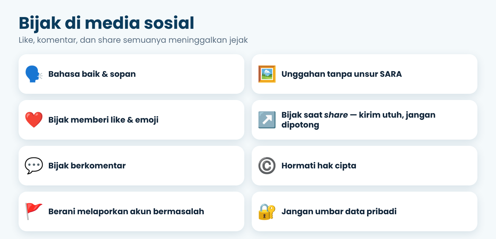
KUDA 3 · Essay Singkat
⚡ KUDA 3 · Essay Singkat
Dina menerima pesan berantai berisi berita mengejutkan, tetapi belum jelas benar atau tidaknya. Sebutkan DUA hal yang sebaiknya Dina lakukan sesuai netiket!
6. Beda Pendapat, Salah Paham, dan Maaf
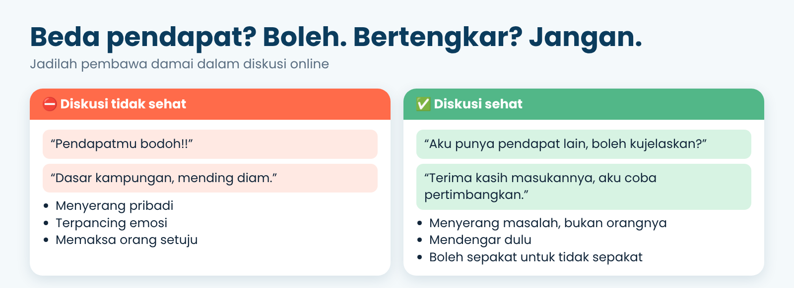
Di internet, tulisan tidak membawa nada suara dan ekspresi wajah, sehingga mudah salah paham. Sebelum marah: tahan, tanya, jelaskan, lalu maafkan.
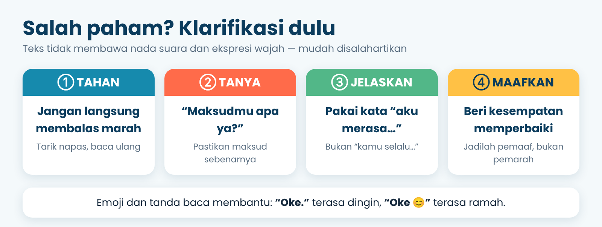
Komentar baik atau kurang baik?
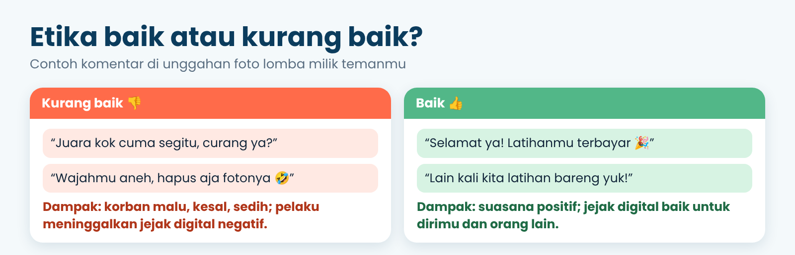
Efek berantai sebuah komentar
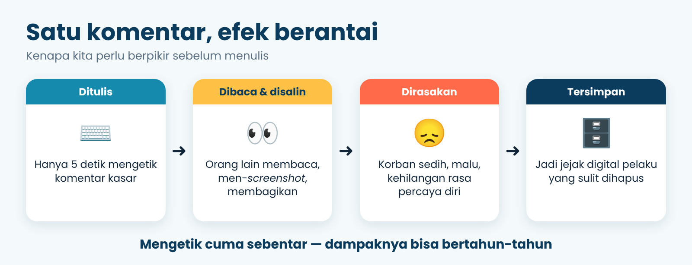
KUDA 4 · Kasus Grup
⚡ KUDA 4 · Pilihan Ganda
Rafi ingin memasukkan Ayu ke grup "Info Lomba", tetapi belum bertanya kepada Ayu. Tindakan yang paling tepat bagi Rafi adalah ....
7. Misi Kamu
Dika menyebar foto Nisa saat presentasi. Fajar bilang "jadiin stiker aja!". Nisa: "...tolong hapus ya. Aku malu." Rani: "Ada yang mau ikut meminta maaf?"
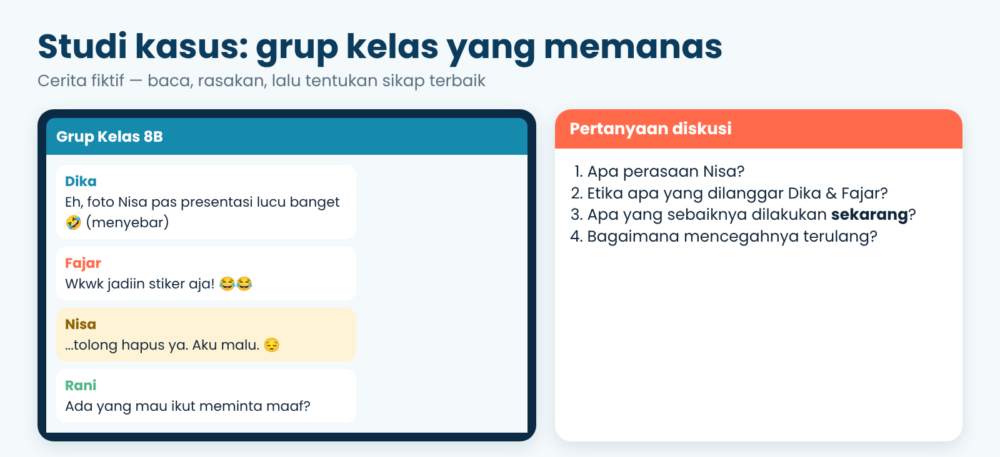
1. Apa perasaan Nisa?
2. Etika/netiket apa yang dilanggar Dika dan Fajar?
3. Apa yang sebaiknya dilakukan sekarang?
4. Bagaimana mencegah kejadian serupa terulang?
- Perasaan Nisa: malu, kesal, sedih, tidak dihargai, mungkin takut tampil lagi.
- Netiket yang dilanggar: 1 (ingat ada orang lain/empati), 3 (berpikir dulu sebelum posting), 8 (hormati privasi); ruang lingkup tanggung jawab dan kebajikan.
- Sekarang: berhenti menyebarkan, hapus foto dan stiker, minta maaf kepada Nisa, minta anggota lain ikut menghapus; jika terus berlanjut beri tahu guru.
- Pencegahan: sepakati aturan grup (izin sebelum menyebar foto), biasakan jeda 5 detik, guru/wali kelas memantau dengan bijak.
Pertahankan maksudnya, ganti caranya. Tulis versimu, lalu bandingkan dengan contoh.
❌ "Gambarmu jelek banget."
❌ "Dasar pemula, main aja nggak bisa."
❌ "Kamu salah, tahu apa sih kamu?!"
❌ "Hapus fotonya, malu-maluin!"
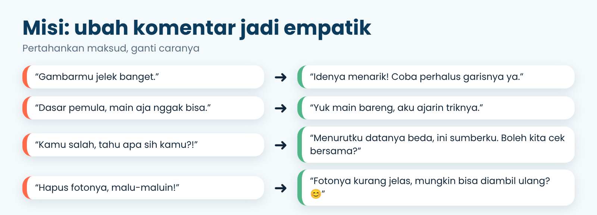
Tantangan: cari 12 kata sikap warganet
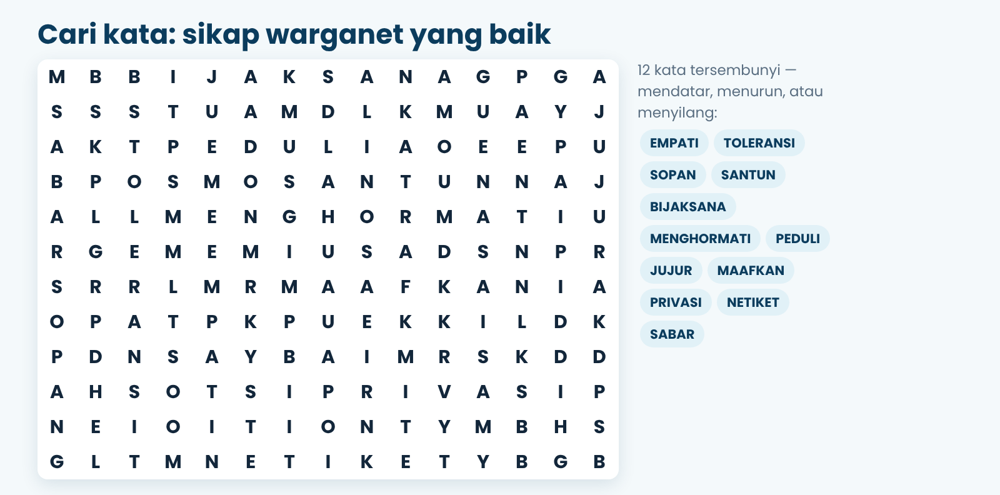
Lihat kunci cari kata
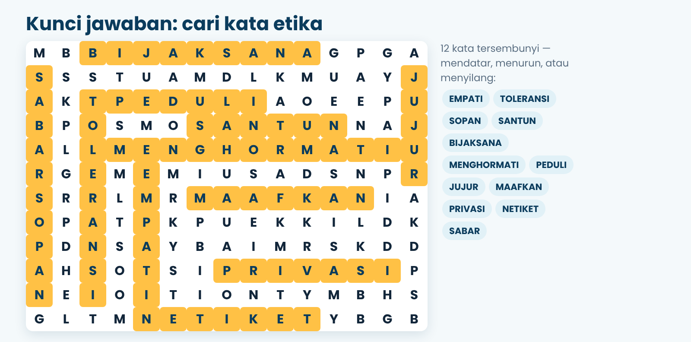
8. Kuis Akhir (10 soal)
9. Rangkuman & Refleksi
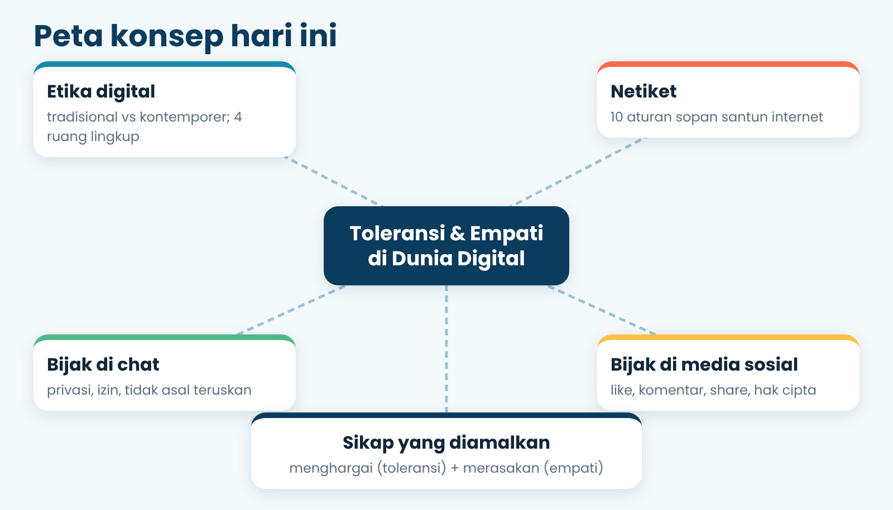
- Toleransi = menghargai perbedaan. Empati = merasakan perasaan orang lain.
- Etika: tradisional (offline) dan kontemporer (online); ruang lingkup: kesadaran, tanggung jawab, integritas, kebajikan.
- 10 netiket — yang paling sering dilupakan: berpikir dulu sebelum posting.
- Di chat: minta izin, jaga privasi, cek kebenaran. Di medsos: sopan, tanpa SARA, bijak share.
- Perilaku digital adalah cerminan dunia nyata.
Satu kebiasaan digital yang akan kuubah:
Satu teman yang akan kusemangati hari ini:
Sumber: Buku Siswa Informatika Kelas VIII (Edisi Revisi), Bab IV, Kemendikbudristek 2024; Modul Etis Bermedia Digital Kominfo (2021). Kasus bersifat fiktif.